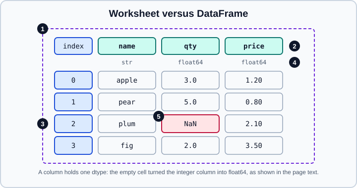

Coming from R & Spreadsheets
|
This content was generated with the assistance of AI and should be verified against the official documentation before being relied on in production. |
Two groups of readers arrive at pandas with strong habits: people who analyse data in R, and people who live in spreadsheets. Both already know what they want to do (filter, summarise, join, reshape); the work is learning the pandas vocabulary and, more importantly, the few places where the model differs. This page gives a translation table for each tool, runs the examples on Python 3.13 with pandas 3.1.0 and NumPy 2.5.4 (checked in October 2026, output shown is real), and states the differences that cause silent wrong answers. It follows the official "Comparison with R / R libraries" and "Comparison with spreadsheets" guides.
If you come from SQL read Coming from SQL; if you are new to pandas, start with 10 Minutes to pandas. The R side of this site is in the R Reference, in particular Data Frames, Factors, Missing and Special Values and Pipes and the Native Pipe. Where R is a better tool than pandas, and the reverse, is discussed in Choosing Tools & Learning Path.
Coming from R
The same idea, a different model
An R data.frame (or tibble) and a pandas DataFrame are both a list of equal-length columns. The differences are in how
you address them and what happens at the edges:
| Topic | R | pandas |
|---|---|---|
Indexing base |
1-based, ranges include both ends: |
0-based; |
Column access |
|
|
Row filter |
|
|
Row names |
Optional character labels, rarely used by tidyverse code |
A real |
Missing values |
|
|
Categories |
|
the |
Pipes |
|
method chaining and |
Copies |
Copy-on-modify |
Copy-on-Write since pandas 3.0: every derived object behaves as a copy |
Non-standard evaluation |
|
Strings or |
Three of these differences deserve a longer explanation.
Zero-based, end-exclusive positions. slice(df, 1:10) and head(df, 10) return ten rows in R; in pandas the same
ten rows are df.iloc[:10] or df.head(10). A position slice never includes its end, but a label slice does:
df.loc[:, "col1":"col3"] includes col3, which is the behaviour of dplyr’s select(df, col1:col3).
Row labels survive. After df[df["x"] > 1] the surviving rows keep their original labels (for example 2 and 5). That
is useful (you can trace a row back) and surprising (positions and labels no longer agree). Call
reset_index(drop=True) to renumber.
No bare names. dplyr verbs evaluate a > 1 inside the data frame. pandas evaluates an expression where you write it,
so you must name the frame (df["a"] > 1). Two helpers close the gap: df.query() takes a string and sees the
columns as variables, and pandas 3 added column expressions, df.loc[pd.col("a") > 1], which stand for "column a of
whichever frame this is applied to" and work inside assign, loc and method chains.
dplyr verbs
The examples use this small frame:
import numpy as np
import pandas as pd
df = pd.DataFrame({
"col1": [1, 1, 2, 1, 3, 2],
"col2": [1, 0, 1, 1, 0, 1],
"col3": [5.0, 6.5, 7.0, 8.5, 9.0, 4.0],
"col4": list("abcdef"),
})| R (dplyr or base) | pandas |
|---|---|
|
|
|
|
|
|
|
|
|
|
|
|
|
|
|
|
|
|
|
|
|
|
|
|
|
|
|
|
|
|
|
|
|
|
print(df.query("col1 == 1 & col2 == 1"))
print(df.loc[:, "col1":"col3"].columns.tolist())
print(df.drop(columns=["col1", "col2"]).columns.tolist())
print(df[["col1"]].drop_duplicates())
print(df.sort_values(["col1", "col3"], ascending=[True, False]).index.tolist())
print(df.assign(c=df["col3"] - df["col1"]).head(2)) col1 col2 col3 col4
0 1 1 5.0 a
3 1 1 8.5 d
['col1', 'col2', 'col3']
['col3', 'col4']
col1
0 1
2 2
4 3
[3, 1, 0, 2, 5, 4]
col1 col2 col3 col4 c
0 1 1 5.0 a 4.0
1 1 0 6.5 b 5.5select(df, -(col1:col3)) has no one-line equivalent when you start from a label range: build the list of names to
drop first (cols_to_drop = df.loc[:, "col1":"col3"].columns). The old inplace=True argument of drop is deprecated
in pandas 3.1; assign the result instead.
Grouping and summarising
summarise after group_by is groupby followed by agg. Named aggregation, new_name=("column", "function"), is the
closest to dplyr’s new_name = fun(column):
print(df.groupby("col1").agg(avg=("col3", "mean"), total=("col3", "sum"), n=("col3", "size")))
print(df.groupby("col1", as_index=False)["col3"].mean()) avg total n
col1
1 6.666667 20.0 3
2 5.500000 11.0 2
3 9.000000 9.0 1
col1 col3
0 1 6.666667
1 2 5.500000
2 3 9.000000Compared with dplyr, remember that the group keys become the index of the result (pass as_index=False or call
reset_index() to get them back as a column), that rows whose key is NaN are dropped unless you pass dropna=False
(R’s aggregate behaves the same way and shows NaN groups as missing), and that sum() on a frame with text columns
concatenates the strings instead of failing: pd.DataFrame({"g": [1, 1, 2], "t": ["a", "b", "c"], "v": [1.0, 2.0, 3.0]})
grouped by g gives "ab" for the text column. Select the numeric columns first or pass numeric_only=True.
Source: pandas documentation, Comparison with R: Grouping and summarizing. More in GroupBy.
Base R idioms
| Base R | pandas |
|---|---|
|
|
Non-contiguous column positions |
|
|
|
|
no single equivalent; |
|
|
|
|
|
|
|
|
print(df["col1"].isin([2, 3]).tolist())
print(df.query("col3 <= 6").shape, df.eval("col1 + col2").tolist())
base = pd.DataFrame({"team": ["a", "a", "b", "b"], "bat": [0.2, 0.3, 0.25, 0.4]})
print(base.pivot_table(values="bat", columns="team", aggfunc="max"))[False, False, True, False, True, True]
(2, 4) [2, 1, 3, 2, 3, 3]
team a b
bat 0.3 0.4eval and query are convenient, and they only run faster than plain Python above roughly 100,000 rows with several
operations in the expression (they need the optional numexpr package for that, installed with pandas[performance]).
plyr and reshape2: split-apply-combine and reshaping
plyr::ddply is groupby plus agg. melt and dcast map to pd.melt and pivot_table; the tidyr verbs
pivot_longer and pivot_wider map to the same functions (pd.melt/DataFrame.melt and DataFrame.pivot or
pivot_table):
d = pd.DataFrame({"month": [1, 1, 2, 2], "week": [1, 1, 1, 2], "x": [1.0, 2.0, 3.0, 5.0]})
print(d.groupby(["month", "week"])["x"].agg(["mean", "std"]).round(2))
cheese = pd.DataFrame({"first": ["John", "Mary"], "last": ["Doe", "Bo"],
"height": [5.5, 6.0], "weight": [130, 150]})
print(pd.melt(cheese, id_vars=["first", "last"])) # reshape2::melt / tidyr::pivot_longer
feed = pd.DataFrame({"Animal": ["cat", "dog", "cat", "dog"], "FeedType": ["a", "a", "b", "b"],
"Amount": [1, 2, 3, 4]})
wide = feed.pivot_table(values="Amount", index="Animal", columns="FeedType", aggfunc="sum")
print(wide) # reshape2::dcast / tidyr::pivot_wider
print(wide.reset_index().columns.tolist()) mean std
month week
1 1 1.5 0.71
2 1 3.0 NaN
2 5.0 NaN
first last variable value
0 John Doe height 5.5
1 Mary Bo height 6.0
2 John Doe weight 130.0
3 Mary Bo weight 150.0
FeedType a b
Animal
cat 1 3
dog 2 4
['Animal', 'a', 'b']Two details differ from R. A standard deviation of a single value is NaN in pandas (the sample standard deviation is
undefined), exactly as in R. And melting columns of different dtypes into one value column produces a common dtype: the
integer weight became a float next to the float height. The long format, stack and explode are covered in
Melt, Stack & Explode and
Pivot & Pivot Tables.
Source: pandas documentation, Comparison with R: plyr and the reshaping guide.
Pipes become method chains
R code reads left to right through %>% or |>. In pandas the same flow is a chain of methods, and a function that is not
a method is inserted with pipe:
frame = pd.DataFrame({"g": ["a", "a", "b"], "x": [1, 2, 3], "y": [4, 5, 6]})
result = (
frame
.query("x > 1") # filter()
.assign(z=lambda d: d["x"] * d["y"]) # mutate()
.groupby("g", as_index=False) # group_by()
.agg(total=("z", "sum")) # summarise()
.sort_values("total", ascending=False) # arrange(desc())
)
print(result) g total
1 b 18
0 a 10Source: pandas.DataFrame.query
A frame can also be passed to any function with frame.pipe(func, *args). Prefer a chain over a sequence of reassignments
of the same variable and avoid inplace=True, which breaks chains and is deprecated in 3.1. See
User-Defined Functions for pipe, apply and agg with your own
functions.
Factors and categories
R’s factor is pandas' category dtype; cut is pd.cut:
f = pd.Series([1, 2, 3, 2, 2, 3]).astype("category")
print(f.cat.categories.tolist(), f.cat.codes.tolist()) # levels and integer codes (0-based)
grade = pd.Categorical(["lo", "hi", "lo"], categories=["lo", "hi"], ordered=True)
print(grade, grade.max()) # ordered factor: levels in the order you give
print(pd.cut([1, 5, 9], bins=[0, 3, 6, 10], labels=["low", "mid", "high"]).tolist())[1, 2, 3] [0, 1, 2, 1, 1, 2]
['lo', 'hi', 'lo']
Categories (2, str): ['lo' < 'hi'] hi
['low', 'mid', 'high']As in R, converting an existing column with astype("category") sorts the levels, while passing categories= keeps
exactly the order you give; use cat.reorder_categories to change the order afterwards. Integer codes start at 0 and the
missing value has code -1, whereas R’s integer codes start at 1. See
Categorical Data for the details.
Missing values
R keeps the type of an NA (NA_integer_, NA_character_), so an integer vector with an NA is still integer. In pandas
the default NumPy integer dtype cannot hold a missing value, so a column with a gap is silently converted to float64:
print(pd.Series([1, 2, np.nan]).dtype) # float64
print(pd.Series([1, 2, None], dtype="Int64").tolist()) # nullable integer keeps the typefloat64
[1, 2, <NA>]The nullable dtypes (Int64, Float64, boolean and the "string" dtype) use pd.NA and are closer to R’s behaviour,
including three-valued logic. Details in Nullable Dtypes and
Missing Data.
Coming from spreadsheets
The correspondence

In the figure, marker 1 is the whole sheet, a DataFrame; marker 2 is a column, a Series; marker 3 is the row headings, the Index; marker 4 is the data type, which is one per column; marker 5 is an empty cell, NaN.
| Spreadsheet | pandas |
|---|---|
Worksheet |
|
Column |
|
Row headings (1, 2, 3) |
|
Row |
a row that keeps its label when rows are sorted or filtered |
Empty cell |
|
The single most important difference is the type of a column. A cell can hold a number, text or a date regardless of its
neighbours; a DataFrame column has one dtype, and one text value in a column of numbers makes the whole column object or
str. That is why pandas reading a column in which an empty cell appears gives float64 instead of integers (marker 5
turns the integers above into floats). Another is that a pandas expression is vectorised: you write one expression for
the whole column instead of dragging a formula down.
Reading, saving and looking at data
| Spreadsheet | pandas |
|---|---|
Open a CSV |
|
Text Import Wizard (tab-separated, no header) |
|
Open an .xlsx file |
|
Save as .xlsx |
|
Save as CSV |
|
Scroll through rows |
|
Reading and writing .xlsx needs the openpyxl engine (pip install "pandas[excel]"). A few facts help when you
exchange files with colleagues. Formulas are read as the last values Excel saved, never as formulas, and a workbook
that was never opened and saved by a spreadsheet program has no saved values. to_excel writes values only: since
pandas 3.0 it no longer applies pandas' default header styling. The .xls and .xlsb formats need the xlrd and pyxlsb engines,
which are deprecated in pandas 3.1; the python-calamine engine reads them, and .ods too. All of this is detailed in
Excel and CSV & Text Files.
Formulas become column expressions
Dragging a formula down a column is a vectorised expression. A new column is just an assignment:
tips = pd.DataFrame({
"total_bill": [16.99, 10.34, 21.01, 23.68, 24.59, 8.77],
"tip": [1.01, 1.66, 3.50, 3.31, 3.61, 2.00],
"sex": ["Female", "Male", "Male", "Male", "Female", "Male"],
"day": ["Sun", "Sun", "Thur", "Thur", "Sat", "Sat"],
"size": [2, 3, 3, 2, 4, 2],
})
tips["half"] = tips["total_bill"] / 2 # =B2/2, filled down
print(tips["half"].head(2).tolist())
tips = tips.drop(columns="half") # delete the column
print(np.where(tips["total_bill"] < 10, "low", "high").tolist()) # =IF(B2<10, "low", "high")[8.495, 5.17]
['high', 'high', 'high', 'high', 'high', 'low']Filtering replaces the AutoFilter, and counting the matches replaces the status bar:
print(tips[tips["total_bill"] > 20].shape) # AutoFilter: total_bill greater than 20
is_sat = tips["day"] == "Sat"
print(is_sat.value_counts().to_dict(), tips[is_sat].shape)
print(tips["tip"].sum(), tips["tip"].mean().round(3), tips["tip"].count(), tips["tip"].max()) # SUM, AVERAGE, COUNT, MAX
print(tips["tip"].rank().tolist()) # RANK(3, 5)
{False: 4, True: 2} (2, 5)
15.09 2.515 6 3.61
[1.0, 2.0, 5.0, 4.0, 6.0, 3.0]| Excel | pandas |
|---|---|
|
|
|
|
|
|
|
|
|
|
Sort dialog (sex, then total_bill) |
|
Hide or reorder columns |
|
Delete a column |
|
Rename a header cell |
|
Remove Duplicates |
|
Fill handle |
assign a list to a slice: |
Add a row at the bottom |
|
Dates
A spreadsheet parses dates as you type, and a date is a number with a format. pandas parses on request (pd.to_datetime
or the parse_dates argument of read_csv), and then offers the .dt accessor:
| Excel | pandas |
|---|---|
|
|
|
|
|
|
|
|
|
|
|
|
dd = pd.DataFrame({"start": pd.to_datetime(["2013-01-15", "2013-02-20"]),
"end": pd.to_datetime(["2013-04-10", "2013-02-28"])})
print((dd["start"] + pd.offsets.MonthBegin()).dt.strftime("%Y-%m-%d").tolist())
print((dd["end"] - dd["start"]).dt.days.tolist())
months = dd["end"].dt.to_period("M") - dd["start"].dt.to_period("M")
print(months.tolist(), months.map(lambda off: off.n).tolist()) # month offsets, then plain integers
print(pd.to_datetime(pd.Series(["03/04/2013"]), format="%d/%m/%Y").dt.month.tolist()) # explicit format['2013-02-01', '2013-03-01']
[85, 8]
[<3 * MonthEnds>, <0 * MonthEnds>] [3, 0]
[4]Always pass format= (or dayfirst) for ambiguous text dates, because a spreadsheet silently uses the machine’s locale,
and pandas 3 defaults to microsecond resolution for datetimes (datetime64[us]), not nanoseconds. The difference of
two periods is a month offset object; its .n attribute is the integer. Keep dates as datetimes during calculations and
format them only for output. Time zones use zoneinfo. More in
Time Series.
Text functions
| Excel | pandas |
|---|---|
|
|
|
|
|
|
Text to Columns |
|
|
|
|
|
Find (highlight cells) |
boolean mask: |
s = pd.Series([" Alessandra ", "Bob Smith", "Carl"])
print(s.str.strip().str.len().tolist(), s.str.find("ob").tolist(), s.str[0:1].tolist())
print(s.str.strip().str.split(" ", expand=True))
print(s.str.strip().str.title().tolist())[10, 9, 4] [-1, 1, -1] [' ', 'B', 'C']
0 1
0 Alessandra NaN
1 Bob Smith
2 Carl NaN
['Alessandra', 'Bob Smith', 'Carl']Because the column has the str dtype, .str methods return missing values for missing input and never fail on them. The
pandas 3 str.replace is literal by default (regex=False); older code that relied on a regular expression must now say
regex=True. Details in Text Data & the str Dtype.
VLOOKUP becomes merge
VLOOKUP finds a key in the first column of a range and returns another column. merge does the same for every row at
once and is much more general: the key need not be the first column, no sorting is required, several columns can come
back, and every match gets a row.
prices = pd.DataFrame({"key": ["a", "b", "c"], "price": [1, 2, 3]})
items = pd.DataFrame({"key": ["b", "a", "z", "a"], "qty": [5, 6, 7, 8]})
print(items.merge(prices, on="key", how="left")) # =VLOOKUP(A2, prices, 2, FALSE) key qty price
0 b 5 2.0
1 a 6 1.0
2 z 7 NaN
3 a 8 1.0The unmatched key z yields NaN, the counterpart of #N/A. Use how="inner" to drop unmatched rows. Add
validate="many_to_one" so that an accidental duplicate key in the lookup table raises an error instead of duplicating rows
silently. See Merge & Join.
Pivot tables
A PivotTable is pivot_table (or groupby with unstack). Pass margins=True for the "Grand Total" row and column:
print(pd.pivot_table(tips, values="tip", index="size", columns="sex", aggfunc="mean", margins=True).round(2))sex Female Male All
size
2 1.01 2.66 2.11
3 NaN 2.58 2.58
4 3.61 NaN 3.61
All 2.31 2.62 2.52The aggfunc can be a name ("mean", "sum", "count"), a function or a list. The default is "mean". Because a
pivot table is a regular DataFrame, you can keep going with reset_index(), formulas on the result and charts. More in
Pivot & Pivot Tables.
Find and replace, and one trap
Find and Replace All is replace (whole cell values) or .str.replace (parts of a text):
print(tips.replace("Thur", "Thursday")["day"].tolist()) # whole value matches
print(tips.replace("Thu", "Thursday")["day"].tolist()) # no cell equals "Thu": nothing changes
print(tips["day"].str.replace("Thu", "Thursday", regex=False).tolist()) # substring match['Sun', 'Sun', 'Thursday', 'Thursday', 'Sat', 'Sat']
['Sun', 'Sun', 'Thur', 'Thur', 'Sat', 'Sat']
['Sun', 'Sun', 'Thursdayr', 'Thursdayr', 'Sat', 'Sat']The trap is in the last two lines. DataFrame.replace matches the entire cell, so "Thu" replaces nothing when the data
contains "Thur"; and the substring version replaces the first three letters of "Thur" and leaves the trailing r.
Neither raises an error. Check the result with value_counts().
Limits and what spreadsheets do better
pandas is not a spreadsheet. There is no live recalculation: change a value and nothing downstream updates until you rerun the code, which is a feature when you want a reproducible analysis and a drawback for ad-hoc what-if modelling. There is no cell formatting, formulas or charts embedded in the file you write. In exchange you get a script that anyone can rerun, no row limit other than memory (an Excel sheet stops at 1,048,576 rows), version control, tests and a clear separation between data and logic. For tables far beyond memory see Scaling to Large Datasets and Beyond the Core: Polars, Arrow, DuckDB & Deep Learning.
Where older guides and tutorials are outdated
| Older statement | pandas 3.1 |
|---|---|
|
|
|
Removed in 2.0; use |
|
Removed in 3.0; use |
|
Removed in 3.0; call |
|
Chained assignment never works with Copy-on-Write; use |
|
Removed in 3.0; use |
|
Removed in 3.0: use |
The official R page says |
Ten rows are |
|
Deprecated in pandas 3.1 for the most common methods. |